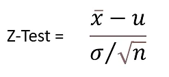
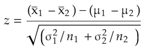
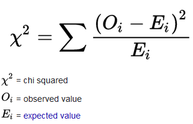

In this exercise We will use following R-packages:
# load library
library(tidyverse)
library(dlookr)
library(moments)
library(car)
library(plyr)
library(data.table)
library(DT)
library(Hmisc)
library(corrplot)
library(corrr)
library(gridExtra)
library(ggExtra)
library(BSDA)
library(GGally)
library(agricolae)
library(multcomp)
library(multcompView)
library(ggfortify)
# install.packages("Metrics")
library(caret)
library(Metrics)In this excersise, we use following data set:
water_soil_rice_arsenic_data.csv: Arsenic (As) data in irrigation water, paddy soil and and rice grain in a contaminated cites from Bangladesh
These data set could be found here.
We import this data using read_csv() from readr package.
# define working directory
dataFolder<-"E:/Dropbox/GitHub/chemstat-r-github.io/Data/"
df<-readr::read_csv(paste0(dataFolder,"water_soil_rice_arsenic_data.csv"))
gh.df<-readr::read_csv(paste0(dataFolder,"green_house.csv"))Z-test is the statistical test used to analyze whether two population means are different or not when the variances are known, and the sample size is large. The z-test is based on the normal distribution.
The assumptions for Z-test are:
All observations are independent.
The size of the sample should be more than 30.
The Z distribution is normal when the mean is 0, and the variance is 1.
(Source: https://www.simplilearn.com/tutorials/statistics-tutorial/z-test-vs-t-test#hypothesis_testing)
A z-score, or z-statistic, is a number representing how many standard deviations above or below the mean population the score derived from a z-test. It is a numerical measurement that describes a value’s relationship to the mean of a group of values. If a z-score is 0, it indicates that the data point’s score is identical to the mean score. A z-score of 1.0 would indicate a value that is one standard deviation from the mean. Z-scores may be positive or negative, with a positive value indicating the score is above the mean and a negative score indicating it is below the mean.
The test statistic is defined by:
Where, Xbar is the sample mean, σ is the population standard deviation, n is the sample size and μ is the population mean.
The following code shows how to perform a one sample z-test in R to determine if the Irrigation Water As causes a significant difference in mmean Soil As levels. We will BSDA package for this analysis. The Null hypothesis is the mean SAs is 17.887 and the Alternative hypothesis is mean As is greater or less than 17.887 or not equal to 17.887.
z.test(df$SAs, mu=mean(df$SAs), sigma.x= sd(df$SAs))##
## One-sample z-Test
##
## data: df$SAs
## z = 0, p-value = 1
## alternative hypothesis: true mean is not equal to 17.887
## 95 percent confidence interval:
## 16.99414 18.77985
## sample estimates:
## mean of x
## 17.887The test statistic for the one sample z-test is 0 and the corresponding p-value is 1. Since this p-value is not less than .05, we do not have sufficient evidence to reject the null hypothesis.
The two sample Z-test statistic is defined by:
Lets perform the two sample z-test in R to determine if the mean As level is different between HL and MHL with 5% level of significance.
# Create dataframes
df.HL <- df %>% dplyr::select(SAs, Land_type) %>%
filter(Land_type == "HL")
df.MHL <- df %>% dplyr::select(SAs, Land_type) %>%
filter(Land_type == "MHL")
# z-test - two tails
z.test(x=df.HL$SAs,
y=df.MHL$SAs,
mu=mean(df$SAs), # population mean
sigma.x=sd(df.HL$SAs), # standard deviation for HL
sigma.y=sd(df.MHL$SAs), # standard deviation for MHL
alternative = "two.sided")##
## Two-sample z-Test
##
## data: df.HL$SAs and df.MHL$SAs
## z = -31.767, p-value < 2.2e-16
## alternative hypothesis: true difference in means is not equal to 17.887
## 95 percent confidence interval:
## -8.615270 -5.535039
## sample estimates:
## mean of x mean of y
## 14.09385 21.16901Since the p-value < 2.2e-16 is lower than the level of significance (α) = 0.05, we reject the null hypothesis. This means we have sufficient evidence to say mean As in HL and MHL are not equal.
A T-test is a parametric test applied to identify how the average of two data sets differs when variance is not given. When the population standard deviation is unknown, the T-test is used in conjunction with the t-distribution. The degree of freedom significantly impacts the shape of a t-distribution. The number of independent observations in a given set of observations is the degree of freedom.
Paired t-test is used when we have the two related samples which. This test is used to check whether there is a significant difference between two population means when their data is in the form of matched pairs
Assumptions for Paired t-test are as follows:
The parent population from which the sample is drawn should be normal.
The samples should be independent of each other.
The sample size should be equal for both the samples, i.e. n1 = n2.
The dependent variable should be continuous.
source: https://www.simplilearn.com/tutorials/statistics-tutorial/z-test-vs-t-test#hypothesis_testing
In this exercise we will use rice arsenic data in a greenhouse experiemnt which could be found here
We will perform two-sample t-test with the hypothesis that the rice grain As is higher when it grow in soil with high soil As at a 5% level of significance.
glimpse(gh.df)## Rows: 42
## Columns: 13
## $ ID <dbl> 1, 2, 3, 4, 5, 6, 7, 8, 9, 10, 11, 12, 13, 14, 15, 16, 17, 1…
## $ Treatment <chr> "Low As", "Low As", "Low As", "Low As", "Low As", "Low As", …
## $ Variety <chr> "BR01", "BR01", "BR01", "BR06", "BR06", "BR06", "BR28", "BR2…
## $ REP <dbl> 1, 2, 3, 1, 2, 3, 1, 2, 3, 1, 2, 3, 1, 2, 3, 1, 2, 3, 1, 2, …
## $ PH <dbl> 84.0, 111.7, 102.3, 118.0, 115.3, 111.0, 114.3, 124.0, 120.3…
## $ TN <dbl> 28.3, 34.0, 27.7, 23.3, 16.7, 19.0, 21.7, 25.3, 23.0, 19.7, …
## $ PN <dbl> 27.7, 30.0, 24.0, 19.7, 12.3, 15.3, 19.3, 21.0, 19.0, 14.7, …
## $ GW <dbl> 35.7, 58.1, 44.6, 46.4, 19.9, 35.9, 56.2, 49.2, 48.6, 36.6, …
## $ ster <dbl> 20.5, 14.8, 5.8, 20.3, 32.3, 14.9, 6.1, 9.2, 4.2, 12.1, 11.5…
## $ DTM <dbl> 126.0, 119.0, 119.7, 119.0, 120.0, 116.3, 123.7, 114.3, 113.…
## $ SW <dbl> 28.4, 36.7, 32.9, 40.0, 28.2, 42.3, 35.4, 60.6, 69.8, 57.3, …
## $ GAs <dbl> 0.762, 0.722, 0.858, 1.053, 1.130, 1.011, 0.965, 0.969, 0.89…
## $ STAs <dbl> 14.60, 10.77, 12.69, 18.23, 13.72, 15.97, 14.49, 16.02, 15.2…# Create dataframes
low <- gh.df %>% dplyr::select(GAs, Treatment) %>%
filter(Treatment == "Low As")
high <- gh.df %>% dplyr::select(GAs, Treatment) %>%
filter(Treatment == "High As")
# Two-Sample T-test
t.test(x=high$GAs,
y=low$GAs,
paired = TRUE,
alternative = "greater")##
## Paired t-test
##
## data: high$GAs and low$GAs
## t = 12.835, df = 20, p-value = 2.052e-11
## alternative hypothesis: true mean difference is greater than 0
## 95 percent confidence interval:
## 0.754535 Inf
## sample estimates:
## mean difference
## 0.8716667Since the p-value [2.052e-11] is less than the level of significance (α) = 0.05, we may to reject the null hypothesis and means rice grain As in contaminated and non-contaminated soil are not equal.
The chi-square test of independence is used to analyze the frequency table (i.e. contengency table) formed by two categorical variables. The chi-square test evaluates whether there is a significant association between the categories of the two variables. This article describes the basics of chi-square test and provides practical examples using R software.
Source: http://www.sthda.com/english/wiki/chi-square-test-of-independence-in-r/
cat.df = df %>% dplyr::select(Land_type, Soil_As_Class)
table(cat.df$Land_type, cat.df$Soil_As_Class)##
## High Low
## HL 52 70
## MHL 118 23# Chi-Squared Test
chisq.test(cat.df$Land_type, cat.df$Soil_As_Class, correct=FALSE)##
## Pearson's Chi-squared test
##
## data: cat.df$Land_type and cat.df$Soil_As_Class
## X-squared = 48.255, df = 1, p-value = 3.742e-12We have a chi-squared value of 48.255. Since we get a p-Value less than the significance level of 0.05, we reject the null hypothesis and conclude that the two variables are in fact dependent. The row and the column variables are statistically significantly associate